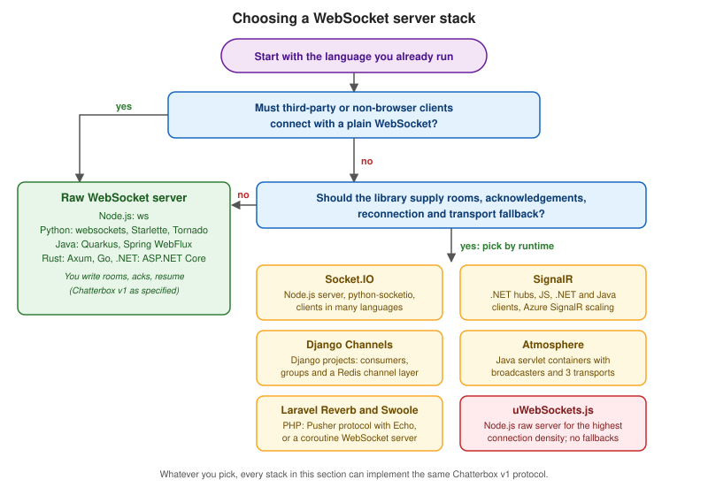

Choosing a WebSocket Stack
|
This content was generated with the assistance of AI and should be verified against the official documentation before being relied on in production. |
Picking a WebSocket server is mostly picking a client contract and a scaling story, and only secondarily a language.
Some stacks speak the plain WebSocket protocol of RFC 6455, so any client that can open wss:// can talk to them. Others
wrap the socket in their own protocol (Socket.IO, the SignalR hub protocol, the Pusher protocol) and give you rooms,
acknowledgements, reconnection and transport fallbacks in exchange for a matching client library. This page compares the
stacks documented in this section on the same axes, helps you choose with a decision flow, and runs two small smoke tests
that put numbers on the cost of an idle connection.
The comparison was checked on 2026-10-24 (the first survey was done on 2026-10-22) against Node.js 24.21 with ws 8.22.0,
socket.io 4.8.4, uWebSockets.js v20.71.0 and NestJS 12.2; Python websockets 17.3 (which requires Python 3.11 or
later), python-socketio 5.17.0, Channels 4.3.2, Starlette 1.10, FastAPI 0.162 and Tornado 6.6; ASP.NET Core 10.0.13 (LTS)
for SignalR; Spring Framework 7.0.10 and Spring Boot 4.1.2; Quarkus 3.40 with WebSockets Next; Atmosphere 4.0.76; Swoole
6.2.3; Laravel Reverb 1.12.0 on Laravel 13; and axum 0.8.9. The scenario used throughout is Chatterbox, the chat
application whose wire protocol is defined on Message Design and Serialization; the same
protocol is what makes the stacks comparable, because every server page of this section implements it.
What you are really choosing
Six decisions are bundled into "which WebSocket server":
-
Protocol and client. Does the server speak plain RFC 6455 (see The WebSocket Protocol) or a framework protocol layered on top? A plain server works with the browser
WebSocketAPI, the Node.js globalWebSocketclient (stable since v22.4.0), mobile libraries andwebsocat. A framework protocol needs the framework’s client, and a plain WebSocket client cannot talk to a Socket.IO server at all, because the first thing it sends is an Engine.IO handshake, not a WebSocket upgrade for your messages. -
Concurrency model. One event loop (
ws,websockets, Tornado, Starlette on uvicorn), a native event loop driven from JavaScript (uWebSockets.js), a reactive pipeline (Spring WebFlux), virtual or platform threads (Atmosphere on a servlet container), Rust tasks (Axum), coroutines in multiple worker processes (Swoole) or a ReactPHP loop (Reverb). The model decides what blocks other connections, how much memory each connection holds and how you share state. -
Transport fallbacks. Socket.IO falls back to HTTP long polling, SignalR to Server-Sent Events and long polling, and Atmosphere to SSE, streaming and long polling. Fallbacks help clients behind hostile proxies, but they are the reason those stacks need sticky sessions (see Scaling WebSockets).
-
Rooms and groups. Whether "send to everyone in room X" is a library feature (Socket.IO rooms, SignalR groups, Channels groups, Atmosphere broadcasters, Reverb channels, uWebSockets.js topics) or a
Setof sockets that you maintain. -
Scaling across instances. Whether a built-in adapter or backplane fans messages out between servers (Socket.IO adapters, Channels channel layers, the SignalR Redis backplane or Azure SignalR Service, Atmosphere Redis and Kafka broadcasters, Reverb’s Redis scaling) or whether you write a Redis pub/sub or Streams bridge yourself.
-
Maturity and fit. How long the project has been maintained, how it is governed and licensed, and how well it fits the stack you already run (an existing Django, Spring, Laravel or ASP.NET Core application should usually stay on its own stack).
None of the six is about raw speed. A single-core Node.js process with ws handles tens of thousands of idle
connections, and the real limits come from the work done per message, from the proxy in front and from the file
descriptor limit. Throughput claims published by library authors are self-reported measurements on their own hardware;
treat them as upper bounds and measure your own workload, as described on
Load Testing and Capacity Planning.
The comparison
The first table covers the stacks that have a dedicated page in this section.
| Stack | Language, version | Model | Protocol | Fallback transports | Rooms | Built-in scaling |
|---|---|---|---|---|---|---|
Socket.IO (server) |
Node.js, |
Event loop on Engine.IO, WebSocket plus polling |
Socket.IO v5 over Engine.IO v4 |
HTTP long polling, optional WebTransport |
Namespaces and rooms |
Adapters (Redis pub/sub, Redis Streams, Postgres, MongoDB, cluster); sticky sessions required |
Python, 5.17.0 |
asyncio or threads (eventlet, gevent) |
Socket.IO v5, interoperable with the JavaScript server and client |
HTTP long polling |
Namespaces and rooms |
Client managers over Redis, Kafka or RabbitMQ; sticky sessions required |
|
Node.js addon, v20.71.0 |
Native C++ loop inside one Node.js thread |
Plain WebSocket |
None |
Topics (publish and subscribe within the process) |
None across processes; add your own bridge |
|
Python, Channels 4.3.2 |
ASGI consumers (async or threaded sync) |
Plain WebSocket (any ASGI server) |
None |
Groups |
Channel layers ( |
|
C# on ASP.NET Core 10.0.13 |
Kestrel async I/O with hub dispatch |
SignalR hub protocol (JSON or MessagePack) |
Server-Sent Events, long polling |
Groups, users, connection ids |
Redis backplane (sticky sessions needed) or Azure SignalR Service |
|
Java, Spring Framework 7.0.10 |
Reactive (Reactor on Netty or Jetty) |
Plain WebSocket via |
None |
None (you build it with sinks) |
None; Redis pub/sub or a broker bridge |
|
Java 21+, 4.0.76 |
Servlet container with async I/O |
Plain WebSocket plus |
SSE, streaming, long polling |
Broadcasters |
Redis and Kafka broadcasters; sticky sessions for fallbacks |
|
PHP, 6.2.3 |
Event loop with coroutines in several worker processes |
Plain WebSocket |
None |
Connection ids ( |
None across servers; Redis pub/sub |
|
PHP, 1.12.0 on Laravel 13 |
ReactPHP event loop |
Pusher protocol (Laravel Echo, |
None |
Public, private and presence channels |
Redis pub/sub scaling option |
The second table covers the stacks that have a page elsewhere on this site and are shown here only for comparison. Every one of them speaks plain WebSocket, so the Chatterbox protocol maps onto them directly.
| Stack | Language, version | Model | What it gives you |
|---|---|---|---|
Node.js, 8.22.0 |
Event loop |
The reference minimal server: handshake, framing, |
|
Python, FastAPI 0.162, Starlette 1.10 |
ASGI coroutines on uvicorn |
|
|
Python, 6.6 |
asyncio coroutines |
|
|
Java, Quarkus 3.40 |
Vert.x event loop, virtual threads or workers |
Annotated endpoints, |
|
Java, Faces 4.1 |
Servlet container |
Server-to-client push only, with channels scoped to application, session or view. Not a general bidirectional channel. |
|
Rust, axum 0.8.9 |
Tokio tasks |
The |
|
Node.js, NestJS 12.2 |
Event loop |
|
For ASP.NET Core, the site also has the shorter SignalR overview and the
SignalR 2 page for classic ASP.NET; the Python websockets library, which is the
plain-protocol counterpart of ws, appears in the Python smoke test below.
Maturity, licence and governance
-
Socket.IO is MIT licensed and maintained by the Socket.IO organisation.
@socket.io/redis-adapter8.3.0 (2024) and@socket.io/admin-ui0.5.1 (2022) have not been released for a long time but are still the current versions, so a quiet repository is not by itself a warning. -
uWebSockets.js is not published to npm. It installs from a GitHub tag (
npm install uNetworking/uWebSockets.js#v20.71.0) as a native addon with prebuilt binaries per platform and Node.js ABI. Its licence is unusual (all rights reserved, with Apache-2.0 for source files that carry an explicit notice, and rules about renamed forks), so read the licence in the repository before shipping it in a product. Its benchmark figures are self-reported. Bun’s WebSocket server is built on a fork of the same C++ core. -
SignalR ships with ASP.NET Core and follows its support policy: .NET 10 is the LTS release, and .NET 11 was still a release candidate at the check date, so features such as authentication refresh (
EnableAuthenticationRefresh) are available only on the newer runtime. -
Atmosphere 4 requires JDK 21 or later and Jakarta EE 10 or later. It dropped the Jersey, GWT, Socket.IO, CometD and SwaggerSocket modules and the old
atmosphere-javascriptclient in favour of the TypeScriptatmosphere.js5 client, and its Hazelcast and JGroups clustering stopped at 2.6.5. Documentation moved fromatmosphere.github.io/docs/toasync-io.live/docs/. -
Django Channels 4 made Daphne optional (install
channels[daphne]), removedAsgiHandler, and shipsInMemoryChannelLayerfor development only. -
Spring Framework 7 removed Undertow support. STOMP,
@MessageMappingover STOMP,SimpMessagingTemplateand SockJS exist only on the Servlet stack, not on WebFlux. -
Swoole and its fork OpenSwoole (namespace
OpenSwoole\, PHP 8.3 or later) are separate projects with different cadences; the Swoole page uses Swoole and notes the fork’s differences. -
Laravel Reverb is first-party Laravel software and moves with Laravel releases.
The decision flow

Read the flow top to bottom. The first question is about your clients, not your servers: if you cannot control them (public API consumers, IoT devices, other teams' apps, a mobile app released on a slow cycle), choose a plain-protocol server so that nobody depends on a framework client. If you control both ends, the second question is about how much you want the library to do. A library that supplies reconnection, acknowledgements and rooms removes weeks of work and adds a dependency on its client and its protocol version.
The diagram shows the lock-in: a client library can only talk to the server on its row. A plain WebSocket client can in principle open a socket to any of them (SignalR and Reverb accept WebSocket upgrades too), but it would have to re-implement the framework protocol by hand.
Shortcuts that usually hold
-
You already run a framework. Stay on its stack: Django with Channels, Laravel with Reverb, ASP.NET Core with SignalR, Spring with WebFlux (or the Servlet stack with STOMP), NestJS with a gateway, FastAPI with its WebSocket routes. A second runtime for sockets is a second thing to deploy, monitor and secure.
-
Node.js and you need rooms, acknowledgements and reconnection now. Socket.IO, then read Socket.IO Protocol and Clients for what the client does for you.
-
Node.js and you need the most connections per core.
wsfor simplicity, or uWebSockets.js when memory per connection and publish throughput dominate and you accept the licence and the native addon. -
Python and you want browser clients with rooms. python-socketio; Python and plain clients: the
websocketslibrary for a standalone server, Starlette or FastAPI inside an existing ASGI app, and Channels inside Django. -
Java. Spring WebFlux for reactive services that hold many mostly-idle connections, Quarkus WebSockets Next for CDI-style endpoints, and Atmosphere when you need transport fallbacks and broadcasters on a servlet container.
-
.NET. SignalR. Writing raw WebSockets on ASP.NET Core is possible but you then rebuild groups, reconnection and scale-out.
-
PHP. Reverb when the browser should use Laravel Echo and the Pusher protocol and your events come from Laravel; Swoole when you want a long-lived coroutine server with raw sockets and shared memory.
-
Rust or Go. A plain server (Axum, or a Go library) and Chatterbox v1 exactly as written.
How each scenario maps onto the stacks
Chatterbox (chat) needs rooms, ordered history, presence and acknowledged messages; every stack can host it, and
Socket.IO, SignalR and Reverb provide some of the plumbing out of the box. Huddle (videoconference) uses a WebSocket
only for signalling, which is a few messages per second per user, so any stack works and the deciding factor is the
language of the rest of the platform (see Signaling and Perfect Negotiation). Pixel Arena (game) sends
many small updates per second to each player, which favours the lowest per-message overhead (ws, uWebSockets.js,
Axum, Swoole) and a binary encoding; fallbacks hurt there, because long polling cannot sustain a tick loop. Games should
also consider WebRTC data channels and WebTransport, covered in
Data Channels and WebTransport and Media over QUIC.
Behaviour that does not depend on the stack
Several facts hold for every row of the tables and are worth stating once.
-
Browsers do not apply the same-origin policy to WebSocket handshakes and send cookies automatically. Every server must allow-list the
Originheader, or Cross-Site WebSocket Hijacking (CSWSH) is possible. Frameworks differ in the default: Tornado refuses cross-origin handshakes unless you overridecheck_origin, Laravel Reverb’sallowed_originsdefaults to*, andwschecks nothing unless you write averifyClienthook, as the smoke test does. See Security. -
The browser API cannot set custom headers. Tokens travel in a cookie, a short-lived one-time ticket in the query string, the first message, or (as a hack)
Sec-WebSocket-Protocol. SignalR uses?access_token=. Chatterbox uses a one-time ticket or a cookie and a firsthelloframe; details on Authentication and Authorization. -
Browsers may only send close codes 1000 and 3000 to 4999. 1005, 1006 and 1015 never appear on the wire, so application codes such as 4401 and 4429 (Chatterbox) are the only way to tell a client why it was closed.
-
Load balancers close idle connections (AWS ALB defaults to 60 seconds), so heartbeats must be shorter than the idle timeout. Sticky sessions are needed only for HTTP long-polling fallbacks (Socket.IO, SignalR without WebSockets-only mode, Atmosphere). A plain WebSocket cluster does not need stickiness but does need a backplane (Redis pub/sub or Streams, Kafka, Postgres) for fan-out. See Proxies, Load Balancers and Deployment.
-
permessage-deflate (RFC 7692) trades CPU and memory for bandwidth and can leak secrets through a length oracle when secrets and attacker-controlled data share a compression context (CRIME or BREACH style). Its context takeover costs memory per connection; the smoke test below measures how much.
-
Node.js has a browser-compatible global
WebSocketclient, but no server. Servers usews, uWebSockets.js or Socket.IO.
Defaults that change what "idle" costs
| Stack | Defaults worth knowing before sizing |
|---|---|
SignalR |
|
uWebSockets.js |
|
Socket.IO |
Connection state recovery (4.6.0 and later) works with the in-memory, Redis Streams and MongoDB adapters, not with the Redis pub/sub adapter. |
Laravel Reverb |
|
Swoole |
State is per worker process, so shared state goes into |
Spring WebFlux |
Spring Security for WebFlux secures only the handshake; there is no reactive message-level security. |
Django Channels |
|
Examples
Both examples implement the first two steps of Chatterbox v1: a hello handshake and an acknowledged message. They are
not complete chat servers (the stack pages build those); they exist to prove the claims above on your machine. Each uses
the subprotocol token chatterbox.v1, a 16384-byte frame limit, an Origin allow-list for the placeholder origin
https://chat.example.test, a five-second hello deadline and the close codes 4400, 4401 and 4408 from the protocol.
A raw ws server and a Node.js client
Install the pinned server library and run the server on Node.js 22 or later (the client uses the global WebSocket).
mkdir chatterbox-ws && cd chatterbox-ws
npm init -y
npm install ws@8.22.0The server rejects a handshake whose Origin header is present but not on the allow-list (HTTP 403, as the protocol
requires), picks the chatterbox.v1 subprotocol, caps frames at 16384 bytes with maxPayload, and answers hello and
message envelopes.
import { WebSocketServer } from 'ws';
import { randomBytes } from 'node:crypto';
const ALLOWED_ORIGINS = new Set(['https://chat.example.test']);
const wss = new WebSocketServer({
port: Number(process.env.PORT ?? 8080),
path: '/ws',
maxPayload: 16384,
handleProtocols: (protocols) => (protocols.has('chatterbox.v1') ? 'chatterbox.v1' : false),
verifyClient: ({ origin }, done) => {
if (origin === undefined || ALLOWED_ORIGINS.has(origin)) return done(true);
done(false, 403, 'Forbidden');
},
});
let seq = 0;
const sid = () => 's_' + randomBytes(10).toString('hex').toUpperCase();
const send = (ws, type, room, payload) =>
ws.send(JSON.stringify({ v: 1, type, id: sid(), room, ts: Date.now(), payload }));
wss.on('connection', (ws) => {
let ready = false;
const timer = setTimeout(() => ws.close(4408, 'hello timeout'), 5000);
ws.on('close', () => clearTimeout(timer));
ws.on('message', (data, isBinary) => {
if (isBinary) return ws.close(4400, 'text only');
let env;
try { env = JSON.parse(data.toString()); } catch { return ws.close(4400, 'bad json'); }
if (!ready) {
if (env.type !== 'hello') {
send(ws, 'error', null, { ref: env.id ?? null, code: 'unauthorized', message: 'hello first', retryable: false });
return ws.close(4401, 'hello first');
}
ready = true;
clearTimeout(timer);
return send(ws, 'hello', null, {
ref: env.id, userId: 'u1', name: 'Ada', sessionId: sid(),
heartbeatMs: 20000, maxFrameBytes: 16384, resumed: false, rooms: [],
});
}
if (env.type === 'message') {
const assigned = ++seq;
send(ws, 'ack', env.room, { ref: env.id, ok: true, seq: assigned, dup: false, result: {} });
} else {
send(ws, 'error', env.room ?? null, { ref: env.id ?? null, code: 'bad_request', message: 'unsupported in smoke test', retryable: false });
}
});
});
console.log('listening on ws://localhost:8080/ws');Source: ws: API documentation
The client opens the socket with the subprotocol, sends hello, then a message, and prints what it receives.
const ws = new WebSocket(`ws://localhost:${process.env.PORT ?? 8080}/ws`, 'chatterbox.v1');
const frame = (type, id, room, payload) => JSON.stringify({ v: 1, type, id, room, ts: 0, payload });
ws.onopen = () => ws.send(frame('hello', '01JAB3W7Q8Z4N5R6T7V8X9Y0Z1', null, { client: 'node/24' }));
ws.onmessage = (e) => {
const m = JSON.parse(e.data);
console.log(m.type, JSON.stringify(m.payload));
if (m.type === 'hello') ws.send(frame('message', '01JAB3W7Q8Z4N5R6T7V8X9Y0Z2', 'general', { text: 'Hello, Chatterbox', replyTo: null, attachments: [] }));
if (m.type === 'ack') ws.close(1000);
};Source: Node.js: WebSocket global
Run the server in one terminal with node server.mjs and the client in another with node client.mjs. The client prints
the hello reply with the new session id and then the ack for the message with seq 1:
hello {"ref":"01JAB3W7Q8Z4N5R6T7V8X9Y0Z1","userId":"u1","name":"Ada","sessionId":"s_103F4477D7B13427B425","heartbeatMs":20000,"maxFrameBytes":16384,"resumed":false,"rooms":[]}
ack {"ref":"01JAB3W7Q8Z4N5R6T7V8X9Y0Z2","ok":true,"seq":1,"dup":false,"result":{}}The same handshake with the Python websockets library
The websockets library is the plain-protocol server for Python outside a web framework. Version 17.3 requires Python
3.11 or later, so the commands below use the official Python 3.13 container image. The library enables the
permessage-deflate extension by default on both client and server, which matters for the sizing test later.
docker run --rm -v "$PWD":/app -w /app -p 8081:8081 python:3.13-slim sh -c \
"pip install -q websockets==17.3 && python server.py"import asyncio
import json
import os
import time
from websockets.asyncio.server import serve
ALLOWED_ORIGINS = {"https://chat.example.test"}
seq = 0
def frame(kind, room, payload):
return json.dumps({"v": 1, "type": kind, "id": "s_" + os.urandom(10).hex().upper(),
"room": room, "ts": int(time.time() * 1000), "payload": payload})
def check_origin(connection, request):
origin = request.headers.get("Origin")
if origin is not None and origin not in ALLOWED_ORIGINS:
return connection.respond(403, "origin not allowed\n")
return None
async def handler(ws):
global seq
try:
raw = await asyncio.wait_for(ws.recv(), timeout=5)
except asyncio.TimeoutError:
return await ws.close(4408, "hello timeout")
env = json.loads(raw)
if env.get("type") != "hello":
await ws.send(frame("error", None, {"ref": env.get("id"), "code": "unauthorized",
"message": "hello first", "retryable": False}))
return await ws.close(4401, "hello first")
await ws.send(frame("hello", None, {"ref": env["id"], "userId": "u1", "name": "Ada",
"sessionId": "s_" + os.urandom(10).hex().upper(),
"heartbeatMs": 20000, "maxFrameBytes": 16384,
"resumed": False, "rooms": []}))
async for raw in ws:
env = json.loads(raw)
if env["type"] == "message":
seq += 1
await ws.send(frame("ack", env["room"], {"ref": env["id"], "ok": True, "seq": seq,
"dup": False, "result": {}}))
else:
await ws.send(frame("error", env.get("room"), {"ref": env.get("id"), "code": "bad_request",
"message": "unsupported in smoke test",
"retryable": False}))
async def main():
async with serve(handler, "0.0.0.0", 8081, subprotocols=["chatterbox.v1"], max_size=16384,
process_request=check_origin):
await asyncio.Future()
asyncio.run(main())Source: websockets: Server (asyncio)
import asyncio
import json
from websockets.asyncio.client import connect
def frame(kind, id_, room, payload):
return json.dumps({"v": 1, "type": kind, "id": id_, "room": room, "ts": 0, "payload": payload})
async def main():
async with connect("ws://localhost:8081/", subprotocols=["chatterbox.v1"]) as ws:
await ws.send(frame("hello", "01JAB3W7Q8Z4N5R6T7V8X9Y0Z1", None, {"client": "py/1"}))
print(json.loads(await ws.recv())["type"])
await ws.send(frame("message", "01JAB3W7Q8Z4N5R6T7V8X9Y0Z2", "general", {"text": "Hello", "replyTo": None, "attachments": []}))
print(json.loads(await ws.recv())["payload"])
asyncio.run(main())Source: websockets: Client (asyncio)
With the server running, python client.py (from a Python 3.11 or later environment with websockets installed) prints
hello and then the acknowledgement payload with seq 1.
Measuring the cost of idle connections
The next two scripts open N authenticated but idle connections (each completes hello) and hold them, so that you can
read the server process memory before and after. The Node.js version uses the global WebSocket:
const n = +process.argv[2]; let open = 0; const socks = [];
for (let i = 0; i < n; i++) {
const ws = new WebSocket(`ws://localhost:${process.env.PORT ?? 8080}/ws`, 'chatterbox.v1');
ws.onopen = () => ws.send(JSON.stringify({ v: 1, type: 'hello', id: 'x' + i, room: null, ts: 0, payload: {} }));
ws.onmessage = () => { open++; if (open === n) console.log('open', open); };
socks.push(ws);
if (i % 200 === 199) await new Promise(r => setTimeout(r, 100));
}
setTimeout(() => process.exit(0), 20000);Source: MDN: WebSocket
The Python version uses the websockets client:
import asyncio, sys, json
from websockets.asyncio.client import connect
async def main(port, n, hold):
conns = []
for i in range(n):
ws = await connect(f"ws://localhost:{port}/", subprotocols=["chatterbox.v1"])
await ws.send(json.dumps({"v":1,"type":"hello","id":"x%d"%i,"room":None,"ts":0,"payload":{}}))
await ws.recv()
conns.append(ws)
print("open", len(conns), flush=True)
await asyncio.sleep(hold)
asyncio.run(main(int(sys.argv[1]), int(sys.argv[2]), float(sys.argv[3])))Source: websockets: Client (asyncio)
Start each server, note the server’s resident set size (for example with ps -o rss= -p <pid> or the VmRSS line in
/proc/<pid>/status), run the matching client with 2000 connections and read the server again. On the machine used to
check this page (Node.js 24 on the host for ws, Python 3.13 in a Linux container for websockets, 2000 connections,
the client in a separate process) the growth per idle connection was about 21 KB with ws (compression off by default),
about 58 KB with websockets and its default compression, and about 17 KB with websockets after passing
compression=None to serve. These are indications, not benchmarks: they confirm the order of magnitude and show that
leaving permessage-deflate on can triple the memory held per idle connection, which is the cost of its per-connection
compression context. At those sizes 100,000 idle connections need roughly 2 GB with ws and 6 GB with default
compression in websockets, before any application state. Redo the measurement with your own message sizes and
read Load Testing and Capacity Planning before
trusting a capacity number.
Common errors and pitfalls
-
Choosing Socket.IO and expecting plain clients to work. A
new WebSocket("wss://host/socket.io/")connection does not give you Socket.IO messages; you would have to speak Engine.IO v4 yourself. Choose Socket.IO only when you control the client, or use its documented clients for other languages. -
Forgetting sticky sessions behind a load balancer. Stacks with HTTP long-polling fallbacks open several requests that must reach the same instance until the upgrade finishes. Either enable stickiness or restrict clients to the WebSocket transport.
-
Scaling plain WebSockets without a backplane. Two
wsinstances behind a round-robin balancer put users of the same room on different processes, and nothing delivers a message across them. Add Redis pub/sub or Streams (see Scaling WebSockets) before the second instance. -
Treating in-process room helpers as cluster features. uWebSockets.js topics, Quarkus
broadcast(), Axum broadcast channels and Swoole connection ids work within one process only. -
Leaving permessage-deflate on by default and discovering the memory bill at 50,000 connections, as measured above.
-
Putting the protocol in the library’s hands and the identity in nobody’s. Authentication,
Originchecks and per-room authorisation are your code on every stack; no library in this table enforces them for you by default. -
Blocking the event loop. A synchronous database call in a
ws,websockets, Tornado or Starlette handler (or an unhooked blocking call in Swoole) stalls every connection on that loop. -
Picking by benchmark. Echo benchmarks measure the framing path, not your message handler, database or serialisation.
-
Registering SignalR client handlers after
start(). The server can send before the handlers exist; register theon(...)handlers first. -
Reading Atmosphere or Spring tutorials for the wrong generation. Atmosphere 4 and Spring Framework 7 removed modules that older articles still use; check the version in the page you are following.
Security notes
-
Allow-list
Originin the server, not only in the CORS configuration of your HTTP API: CORS does not apply to WebSocket handshakes. Thewsandwebsocketslistings above return 403 for an unknown origin. -
Prefer
wss://everywhere and terminate TLS at a proxy that is configured for WebSocket upgrades. -
Authenticate before you accept state-changing messages. Chatterbox accepts nothing but
hellountil a valid cookie or one-time ticket is presented, and closes with 4401 otherwise. -
Limit frame size at the library (
maxPayload,max_size,maxPayloadLength,MaximumReceiveMessageSize) and rate limit per connection. -
Treat the framework client as part of your attack surface: pin versions, and read the changelog when you upgrade the server, because protocol-level options such as Socket.IO’s
maxHttpBufferSizeor SignalR’s message limits differ per version.
Version and specification notes
-
RFC 6455 is the protocol for every plain stack; RFC 7692 defines permessage-deflate, RFC 8441 bootstraps WebSockets over HTTP/2 and RFC 9220 over HTTP/3. Support for the HTTP/2 and HTTP/3 forms depends on the proxy and server, not on the library choice.
-
Socket.IO 4.x uses Engine.IO protocol v4 and Socket.IO protocol v5; python-socketio 5.x and python-engineio 4.x interoperate with the JavaScript 3.x and 4.x client and server. Socket.IO’s WebTransport guide still says Safari is unsupported, which is out of date: Safari 26.4 supports WebTransport.
-
Python
websocketsmoved to a new asyncio implementation as the default; the olderwebsockets.legacymodules are deprecated, so examples for versions before 14 may import from different modules. -
SignalR on .NET 11 adds authentication refresh and cancellation of non-streaming invocations; Native AOT support is partial (JSON protocol with source generation only, no strongly typed hubs).
Related pages
-
WebRTC & WebSockets for the section map.
-
Message Design and Serialization for the Chatterbox v1 protocol and a reference Node.js server.
-
Server stacks: Socket.IO, Socket.IO Protocol and Clients, python-socketio, uWebSockets.js, Django Channels, SignalR, Spring WebFlux WebSockets, Atmosphere, Swoole and Laravel Reverb.
-
Existing framework pages: Node.js WebSockets and SSE, NestJS WebSockets, FastAPI WebSockets, Tornado WebSockets, Quarkus WebSockets Next, Axum WebSockets, JSF WebSocket Push, Django Channels and WebSockets, Laravel Broadcasting and Reverb, Laravel Octane, Spring MVC SSE and WebSockets and Reactive WebFlux.
-
Scaling WebSockets, Security and Comparison & Decision Guide for the whole-section view.